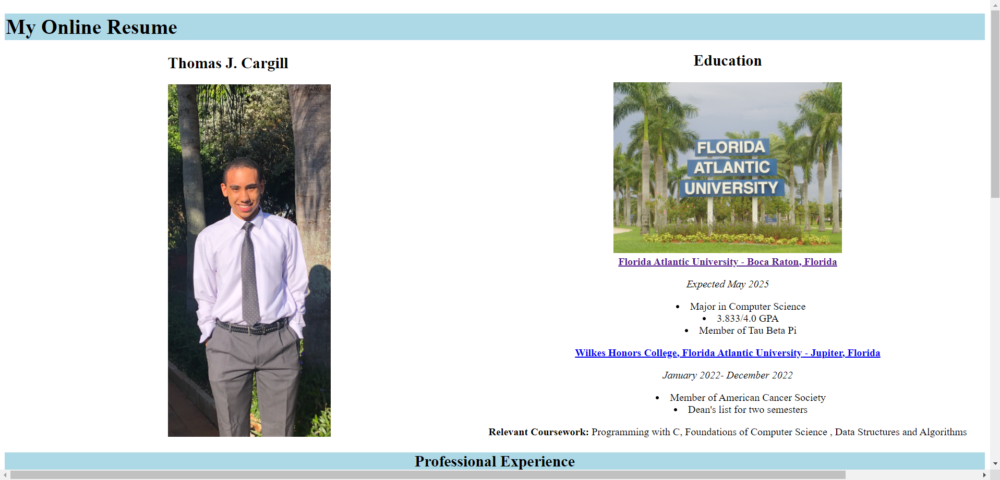
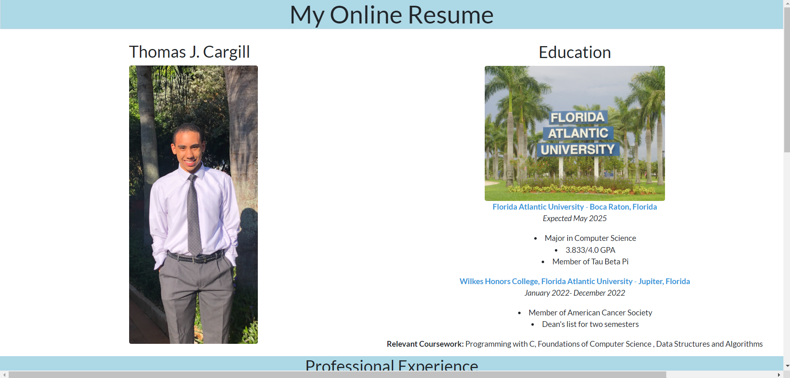
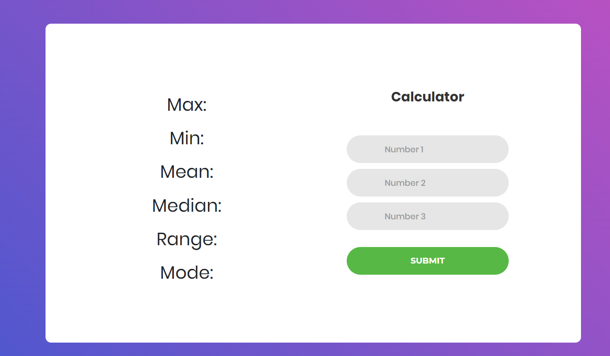
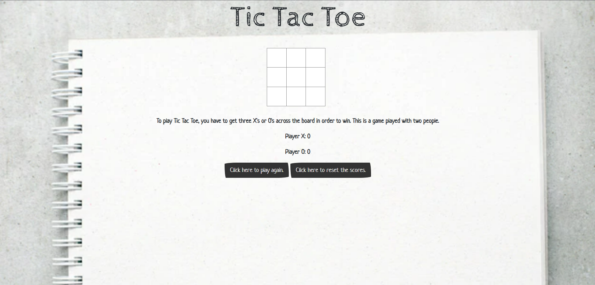
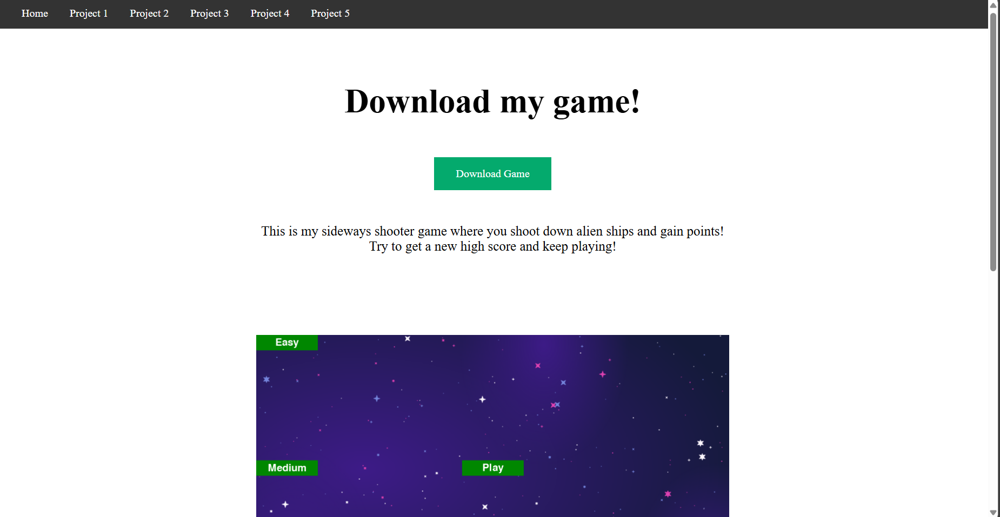
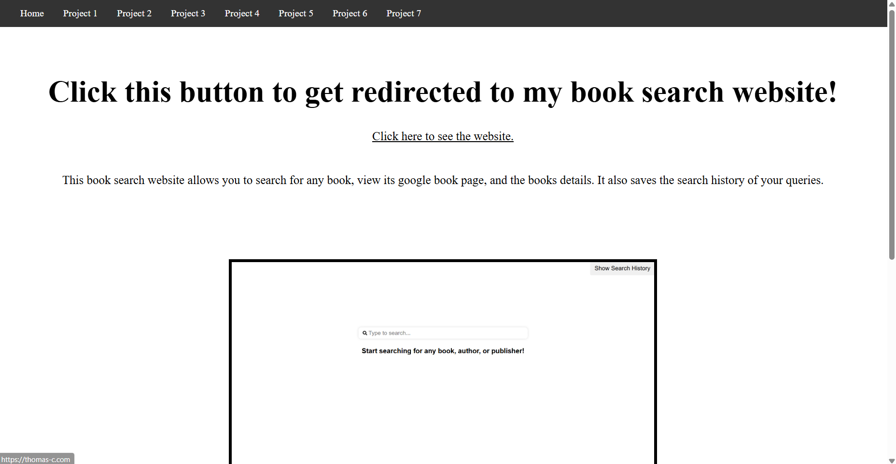

For my first project, I created my own online resume that can be accessed through this link. In here, you can see the school, classes, and projects that I have been working on. I created this first project using only HTML.
For my second project, I updated my online resume with CSS to make it look nicer. This gave a cleaner resume design that you can check out with this link.
For my third project, I created a calculator that took three numbers and got the mean, median, mode, and more! Try it out here:
For my fourth project, I modified this tic-tac-toe game as a website! I added a scoreboard and some buttons to play again. Play here:
For my fifth project, you're looking at it now! It's the home page and it redirects you back here.
For my sixth project, I added a download link where you can play the game I made in PyGame!
For my seventh project, I created a book search application on a website that allows you to search for books!
